we hope you like it
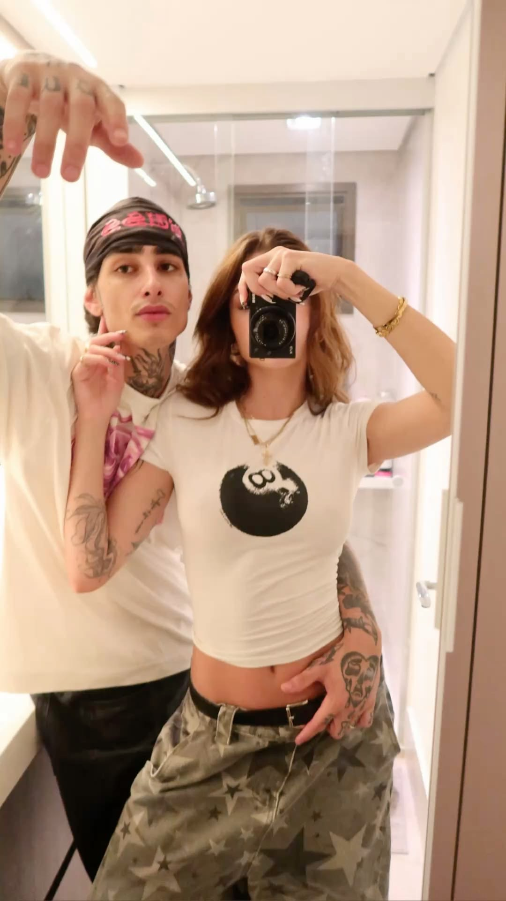
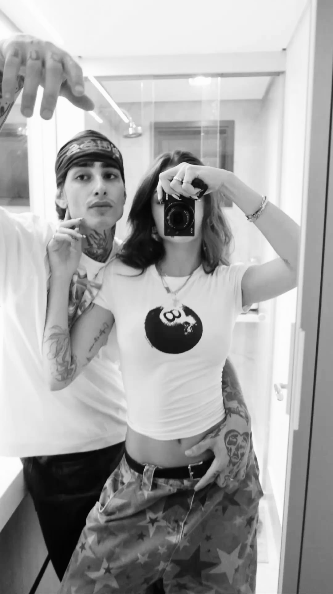
finalmente chegou seu dia, meu bem. não consigo colocar em palavras o quão grata sou por passar essa data ao seu lado pela terceira vez, comemorando sua vida e o caminho tão lindo que você vem seguindo. tenho tanto orgulho de você, meu amor, de tudo que vem conquistando e aprendendo, e quero continuar por perto pra te apoiar em tudo. continuo sendo completamente apaixonada e encantada por você, assim como passei a ser há um ano, quando nessa mesma data, começamos a nos envolver da forma mais genuína e pura possível. o sentimento cresceu a cada dia que passava e nunca mais nos desgrudamos. que sorte a minha de poder me apaixonar pelo meu melhor amigo e ter uma pessoa tão boa e gentil comigo. eu te amo, príncipe. feliz aniversário.
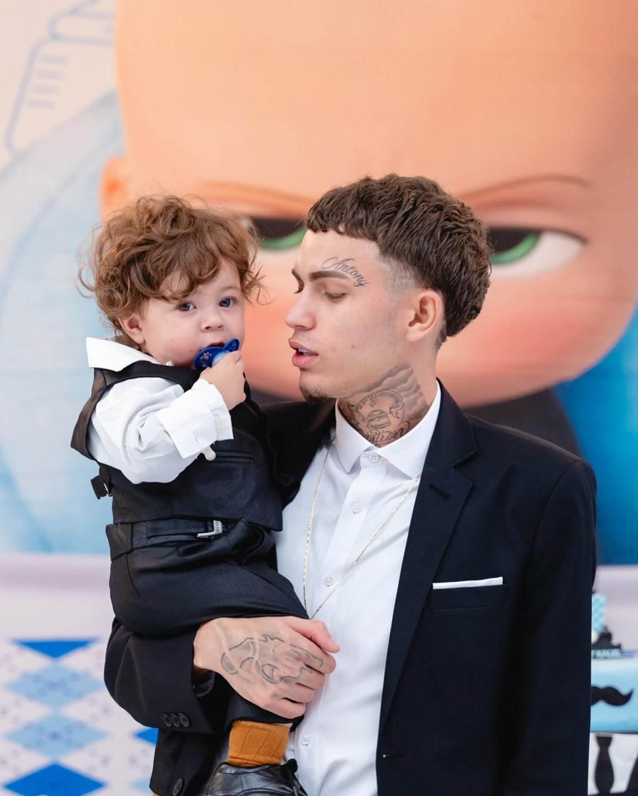
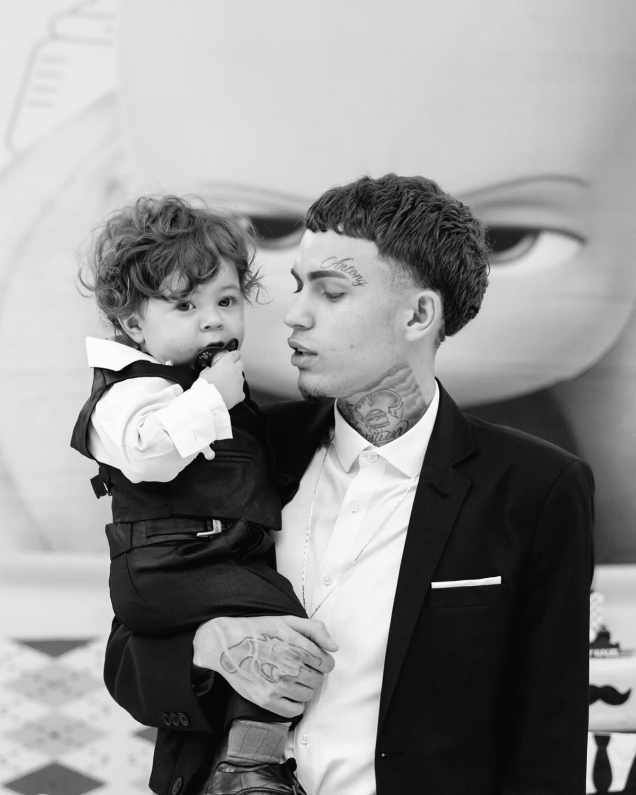
dia de comemorar a vida da pessoa que faz os meus dias mais felizes. filho, você é o maior presente que esse lugar já pôde me dar. nossa relação aconteceu tão de repente, mas ao mesmo tempo é muito verdadeira e cheia de emoção. eu não me vejo mais sem você. você é o meu porto seguro e meu confidente, é a pessoa onde encontro refúgio. saiba que o pai vai estar sempre aqui para te acolher nos momentos difíceis e para comemorar com você nos momentos felizes. eu te amo muito, meu filhote.
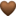
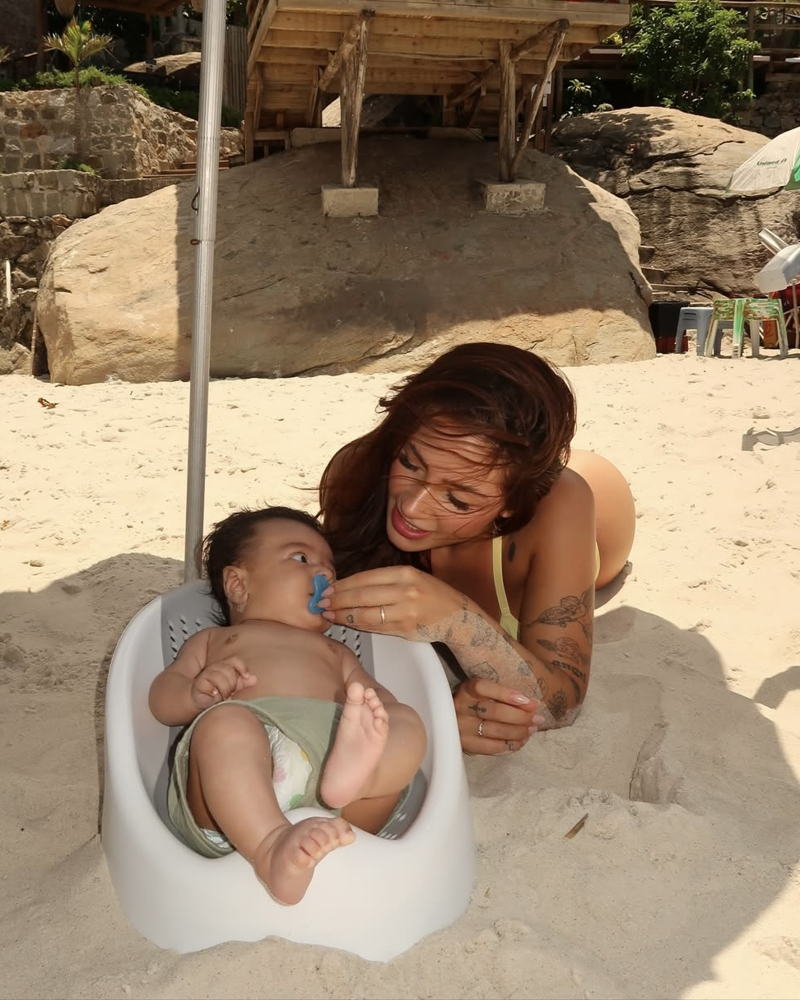
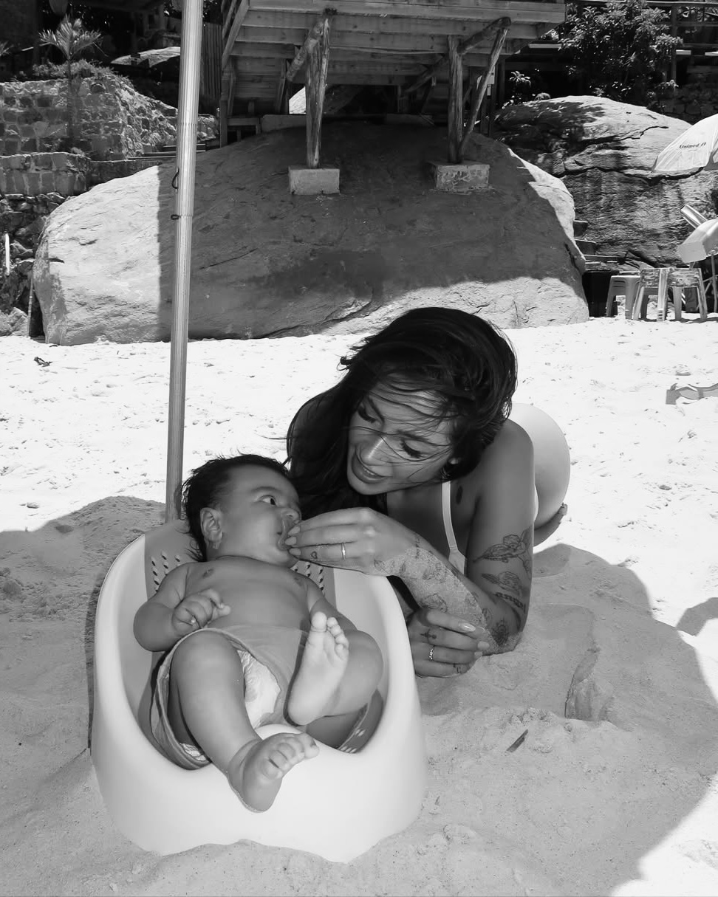
hoje é, sem dúvida, o dia do meu maior amor, do meu pequeno. obrigada por carregar uma essência tão sua, tão rara, que te faz ser exatamente quem é - e que, de um jeito único, te transforma no meu lugar seguro. já são dois anos compartilhando tudo: dias leves e dias difíceis, momentos simples e outros que marcaram a minha vida pra sempre, que minha memória carrega um carinho enorme. cada tempo de qualidade ao seu lado é verdadeiro, daquelas que ficam guardadas com carinho e significado, independente de tudo. você é abrigo, é cuidado, é parte de mim, filho. eu te amo em todos os tempos, hoje e sempre, meu protegido da mãe.
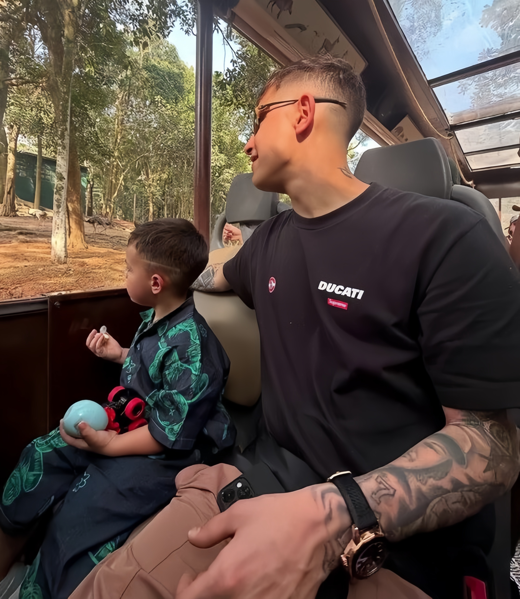
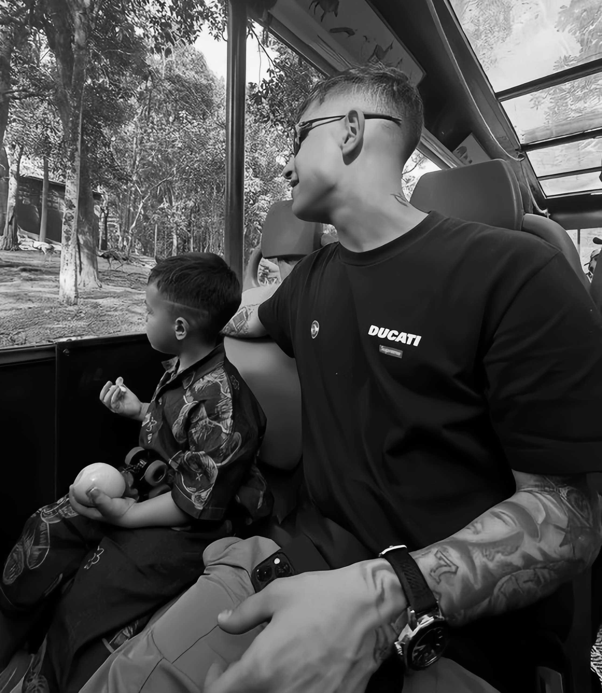
dia do cara que mudou minha visão de uma hora para o outro em tão pouco tempo. eu vejo a eternidade ao seu lado, desde que me reaproximei, desde que nós dois se tornamos um laço só, eu não vejo o fim em nós. passamos por tanta coisa juntos, no final, ficamos juntos, sorrindo, brigando e te amando, papai. obrigado por fazer parte do meu dia e isso só é o começo do seu. celebre assim como vou celebrar de longe, pai. eu te amo, pai, melhor amigo, fiel e confidente desde sempre a tempos!
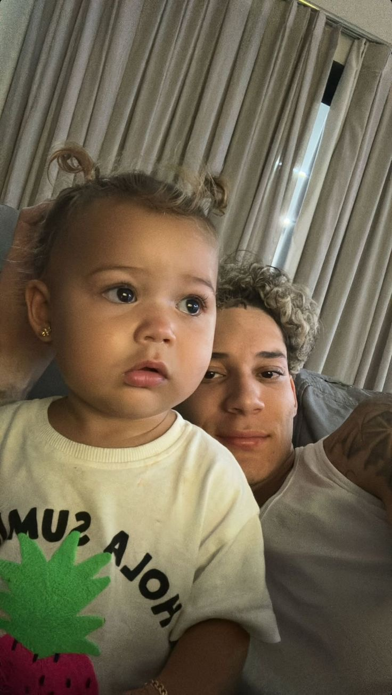
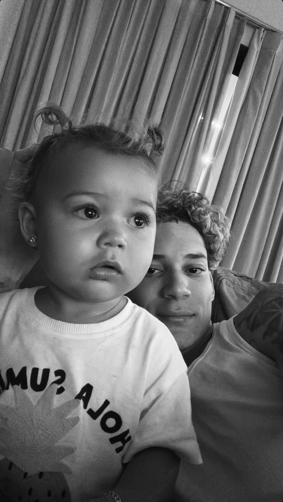
finalmente chegou o dia mais esperado do ano, o dia daquele que fez minha vida mudar, para melhor. aquele que é meu melhor amigo e parceiro de todas as horas, seja nelas ruins, boas e divertidas. somos tão parecidos que as vezes nossas personalidades fortes se cruzam e acabamos discutindo, mas sempre vamos dar um jeito de voltar, se resolver. não sabe o quanto eu admiro sua forma de querer conversar, não deixar só por isso, sempre querer se resolver, essa é uma das coisas que eu mais amo em você, lucca. obrigada por ser o melhor pai do mundo, você fez eu descobrir oq era um amor paterno de verdade e não algo raso, você é meu exemplo de vi e de pessoa. curta muito sua vida, seu dia, e nunca se esqueça que eu sempre estarei aqui pra te aplaudir de pé. eu te amo muito papai, feliz aniversário
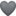
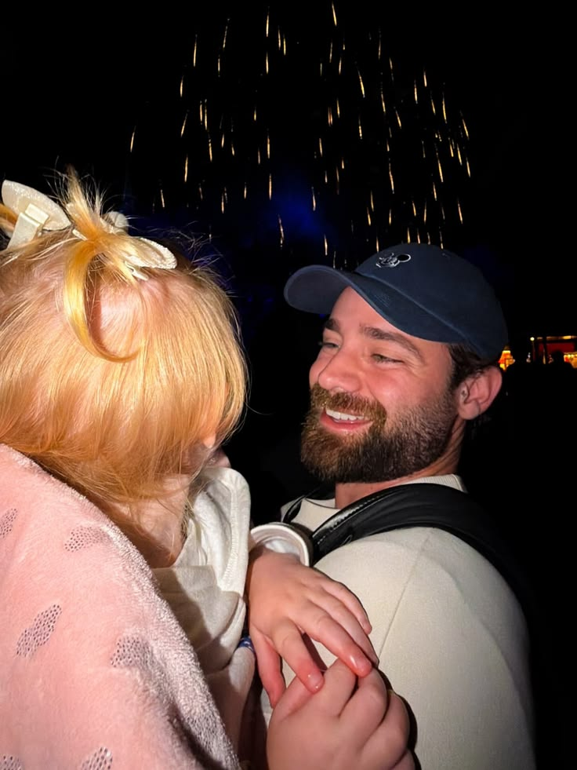
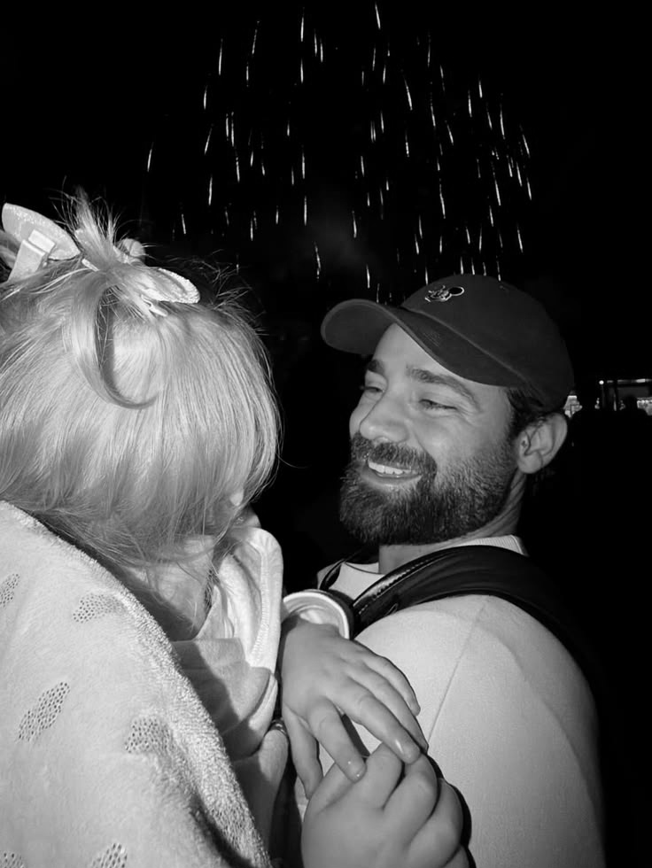
feliz aniversário, papaizinho. é o segundo aniversário que eu passo com você e eu nunca me senti mais feliz. você é a parte que me completa, a parte que me deixa feliz e com uma sensação de “lar”. obrigada por permanecer ao meu lado independentemente das brigas ou discussões. desde o momento em que você foi o meu dindo, eu sabia que a nossa relação e companheirismo seria para sempre. você é e sempre vai ser um dos maiores amores da minha vida. aproveita muito o seu dia, papi. eu te amo com tudo de mim.
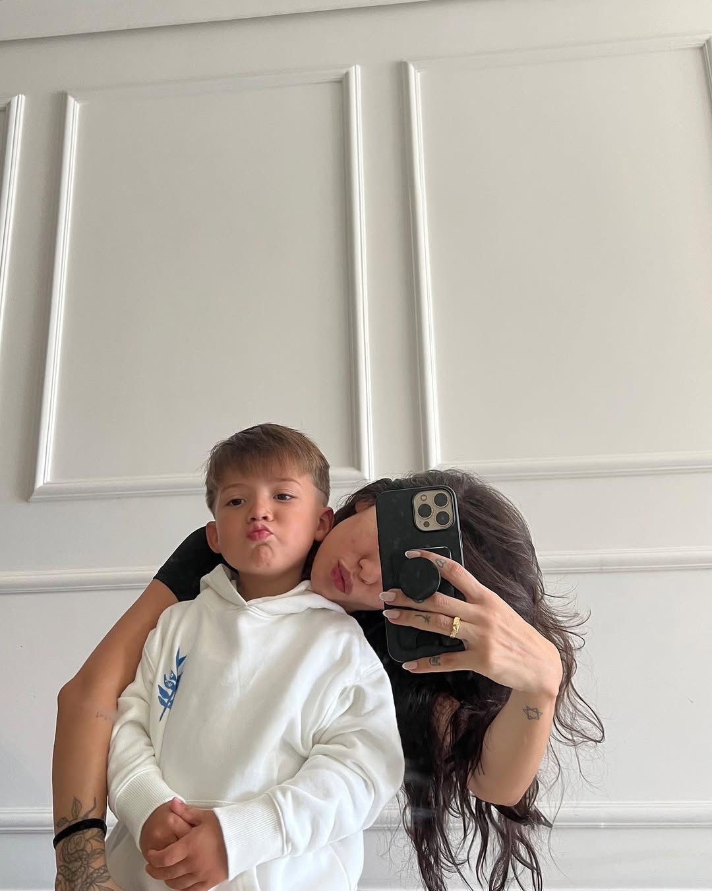
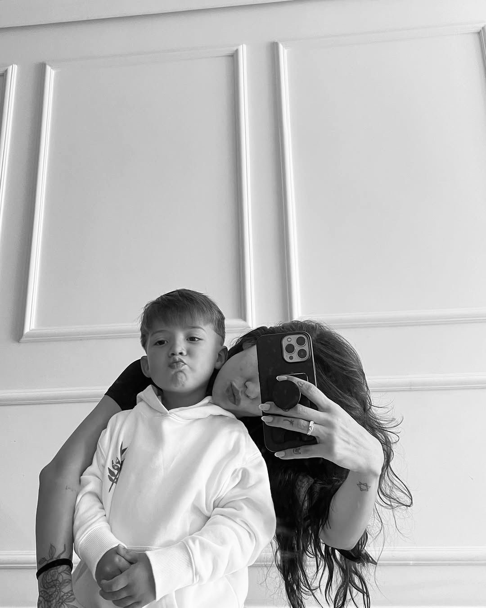
feliz aniversário, chu. te desejo as coisas mais puras, os sorrisos mais sinceros e a maior felicidade do mundo. que a sua vida seja sempre cheia de amor, alegria e momentos inesquecíveis, e que nunca falte carinho, cuidado e pessoas que te façam bem ao seu redor. obrigada por tudo, por confiar em mim, por me deixar cuidar de você e por sempre estar ao meu lado, mesmo sem perceber. sua presença deixa tudo mais leve, mais bonito e mais cheio de sentido. desde 2023 com você, lucca, e mesmo assim parece que te conheço há muito mais tempo. palavras nunca vão ser o suficiente pra explicar o quanto eu te amo e o quanto você é importante pra mim. você sempre esteve comigo, nos momentos bons e também nos difíceis, e isso não tem preço. eu vou estar sempre aqui por você, em cada fase da sua vida, te protegendo, te apoiando e torcendo por cada passo seu. quero te ver crescer feliz, realizando seus sonhos e se tornando cada vez mais essa pessoa incrível que você já é. você é um menino especial, cheio de luz, carinho e um coração enorme. tenho muito orgulho de ser sua tia e de poder acompanhar tudo de pertinho. te amo pra sempre, meu pequeno.
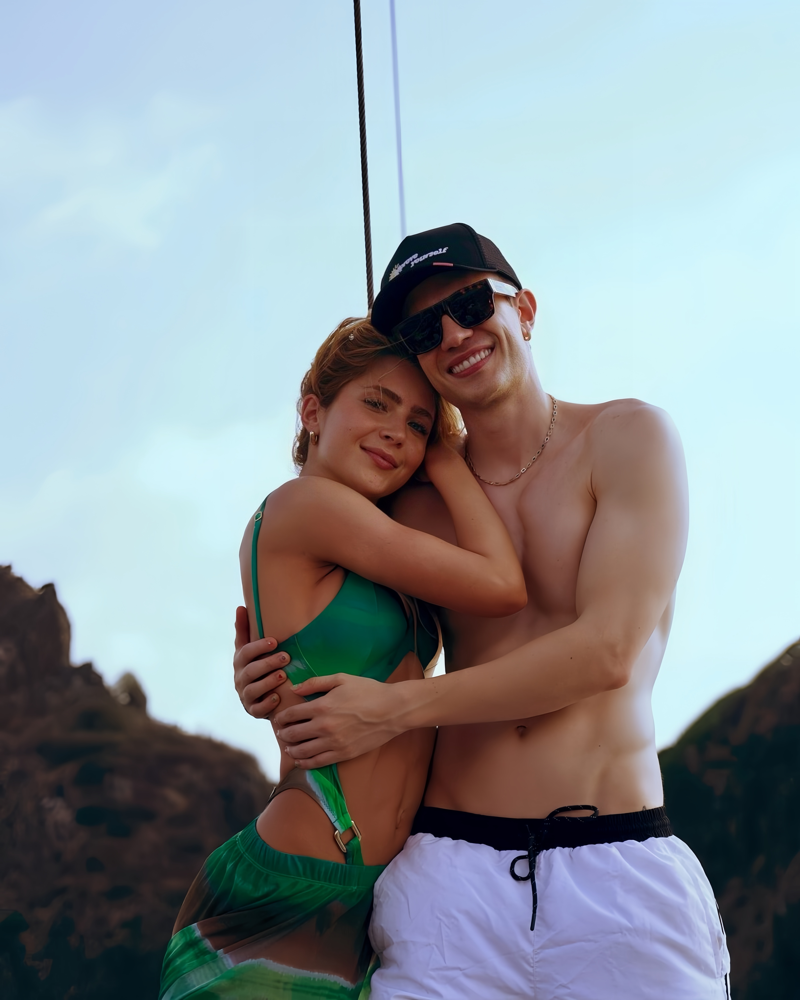
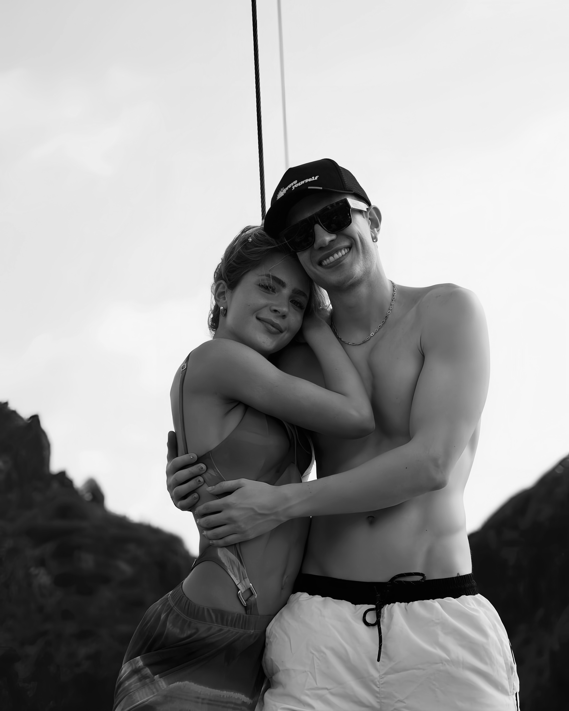
cada momento com você é único, gêmeo. sou grata por ter conhecido você e por cada mínimo detalhe da nossa história, pois, mesmo com diversos momentos difíceis, sempre pude contar com você e com a sua confiança. você mora no meu coração para sempre e sabe que pode contar comigo em qualquer situação, porque não existe outro colo que me faça tão feliz quanto o seu. você é único na minha vida, lucca. eu te amo muito e para sempre. você é o dono da minha maior proteção.
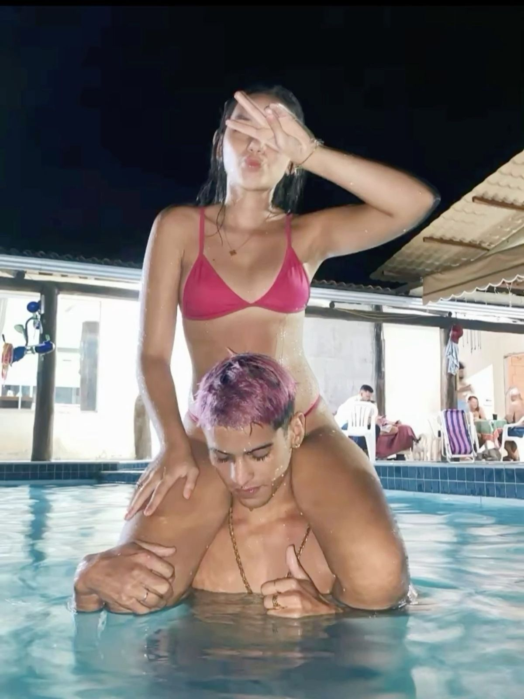
muito antes de ser meu genro, você foi o meu coração, o meu batimento, meu amigo e leal em todos os momentos. você se tornou uma figura parental pra mim; uma relação socioafetiva “reconhecida pelo vínculo de afeto e convivência, mesmo sem laços biológicos ou legais.” acho que sua amizade é uma das mais bonitas em meu ciclo, porque diante de tudo que aconteceu e que eu pude ter o prazer vivenciar ao seu lado, nenhum de nós abriu mão um do outro. eu te amo, coração, genrinho, bebê da sogra, lucca maverick. você merece o amor mais puro sempre.
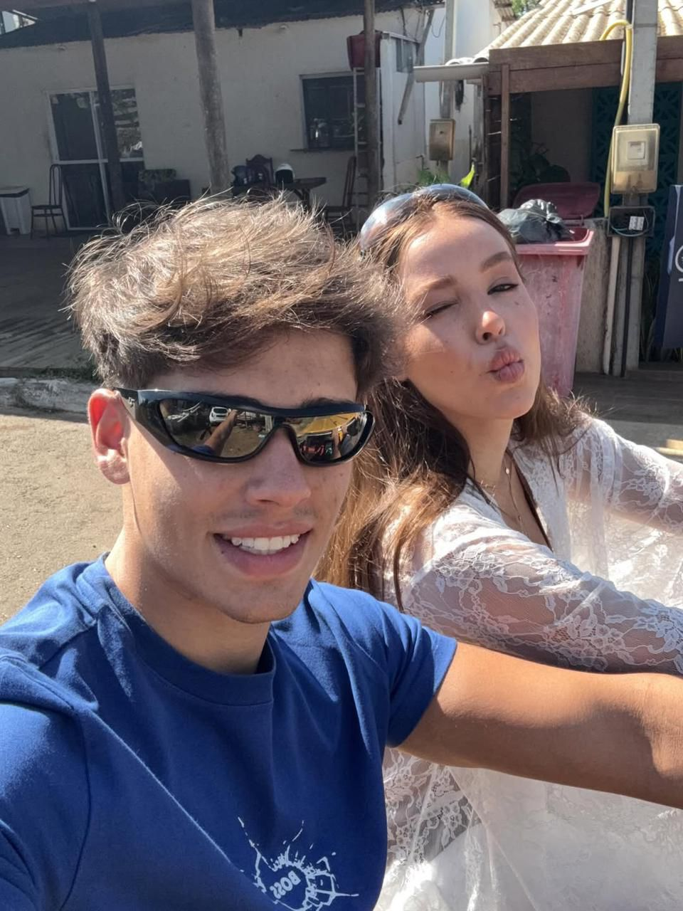
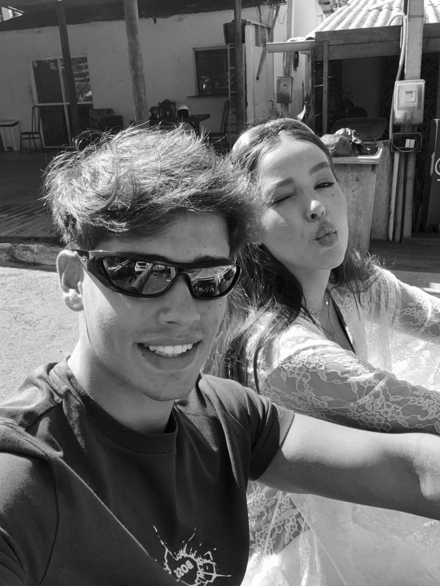
muito antes de ser meu genro, você foi o meu coração, o meu batimento, meu amigo e leal em todos os momentos. você se tornou uma figura parental pra mim; uma relação socioafetiva “reconhecida pelo vínculo de afeto e convivência, mesmo sem laços biológicos ou legais.” acho que sua amizade é uma das mais bonitas em meu ciclo, porque diante de tudo que aconteceu e que eu pude ter o prazer vivenciar ao seu lado, nenhum de nós abriu mão um do outro. eu te amo, coração, genrinho, bebê da sogra, lucca maverick. você merece o amor mais puro sempre.
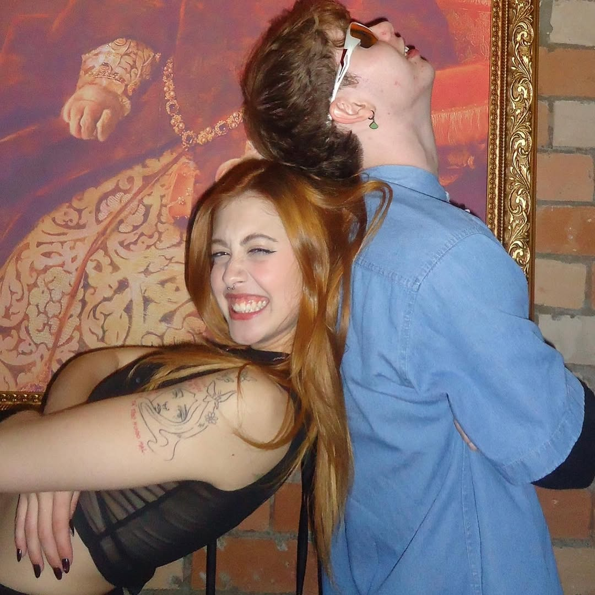
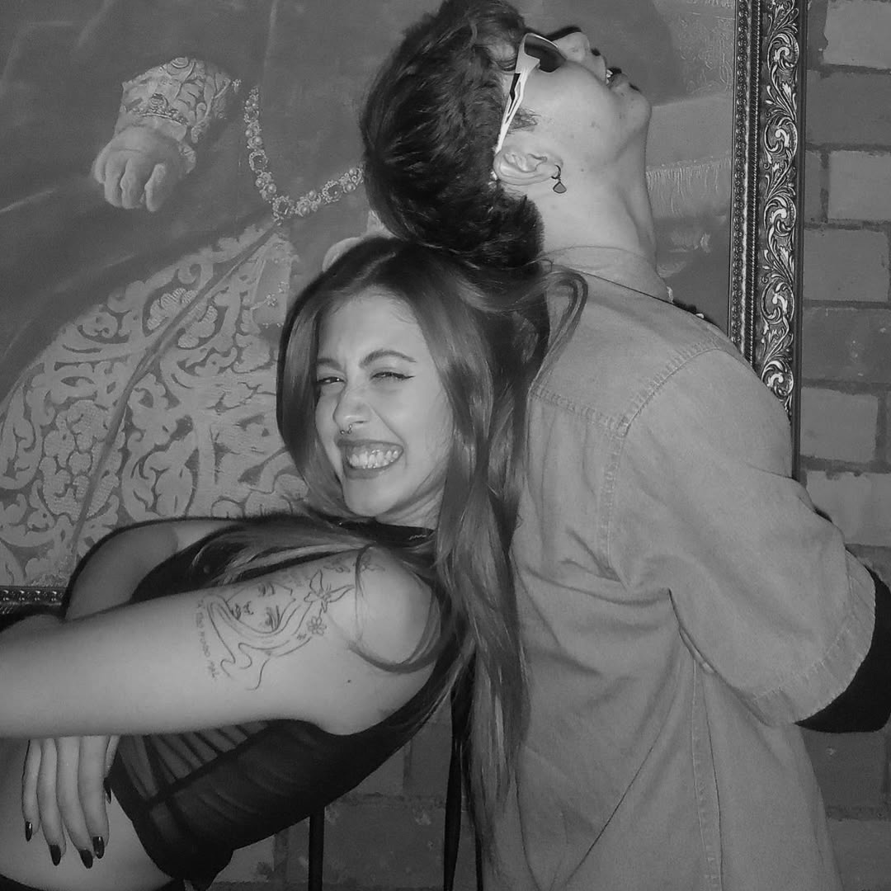
lucca, nossa conexão foi algo inesperado na minha vida, mas que aos poucos sua presença foi se tornando algo essencial para mim. você é uma pessoa cheia de luz, que cuida de todos ao seu redor e protege todos aqueles que ama, sempre de uma forma genuína que chega a ser admirável. sou extremamente grata por tanto, pela nossa amizade, por todos os conselhos, por todas as conversas e risadas, mais ainda por poder passar essa data tão especial ao seu lado. você é, e sempre será, uma das pessoas mais importantes da minha vida. saiba que eu sempre vou estar aqui por você, para te apoiar e cuidar quando precisar. nós somos eternos, amor maior. eu te amo muito. feliz aniversário!